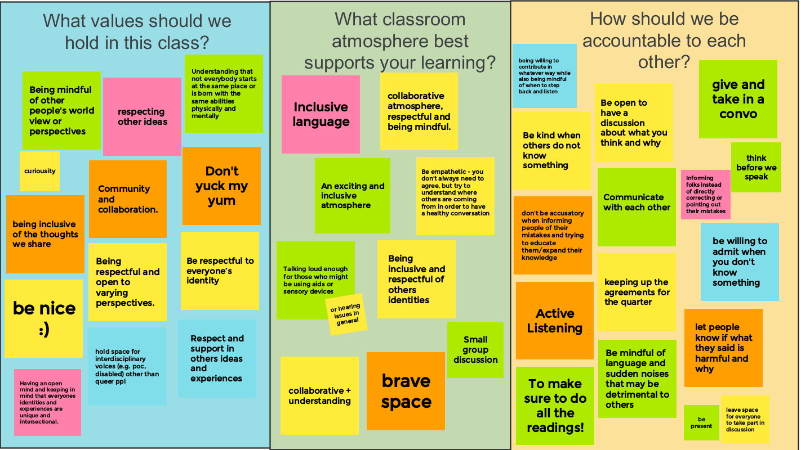

Week 1
Community Building and Expectations
Our class Queer Science Manifesto:
Queer science heals and teaches everyone, past present and future
Queer science investigates that which needs to be explored
Queer science makes space for more perspectives
By bringing more perspectives to research, queer science opens the door for discoveries that might otherwise not have been made
Queer science is a community that includes all and interrupts dominant perspectives
Queer science celebrates collaboration and community over individualism and ego
Queer science can be used as an identity, an action, and also it can be a noun as well as a verb.
Queer science is trans/inter-disciplinary
Queer science values varying inputs that aren’t doing harm.
Queer science creates a community for everyone and provides for that community
Queer science gives aid to those that need it no matter their position to create success and opportunity
Queer science rejects anthropocentricity
Queer science broadens our understanding of the environment
“Queer Science doesn’t just go to the moon, it pays for accessibility, and insists that any people with any kinds of bodies can dream of being astronauts (and work to achieve that goal).”
Queer science is intersectional
Queer science isn’t just for queer people
“Queer Science stops science from being polite…and makes science radical, loud, interrupting.”
Queer science is everything it has failed to fulfill, all the “otherness” it has yet to be.
Queer science fills in blanks left from hegemonic heteronormative perspectives
Queer science is not corrupted by capitalist agendas/greed
“Queer science doesn’t make weapons”
Queer science is less boring
Queer science celebrates collaboration and community over individualism and ego
Queer science paves the way for accessibility
Queer science sets change in motion
Queer science validates identities
Queer science questions everything
Queer science builds bridges where there are gaps
Queer Science fights for equity
Queer science is necessary
Queer science is influential and inspirational
Queer science will aide in the breakdown of harmful social systems
Queer science rejects exploiting nature and people
Queer science has always existed
Our community agreements:
